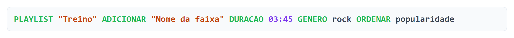
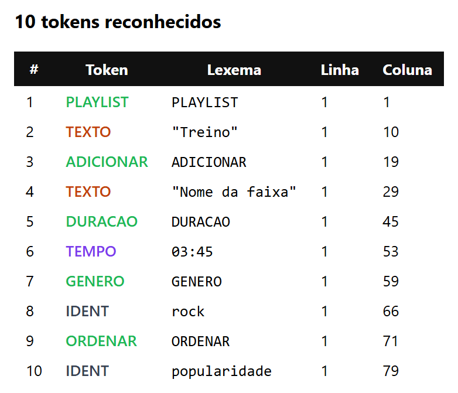
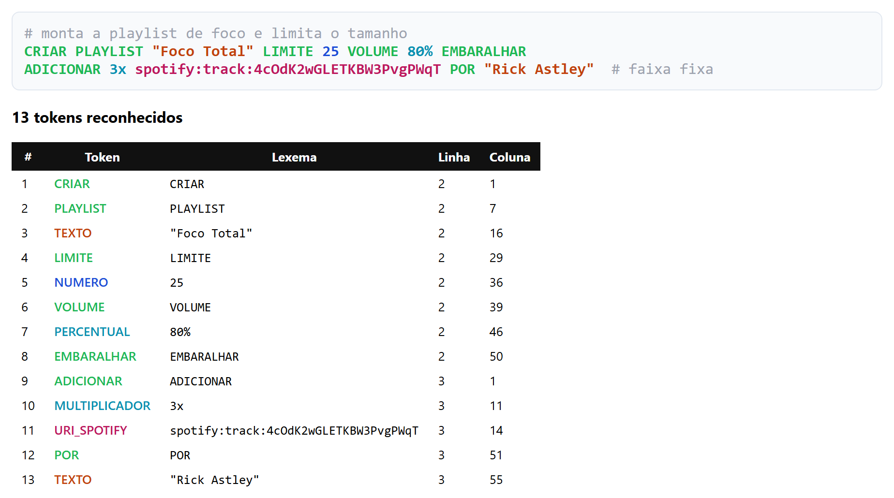
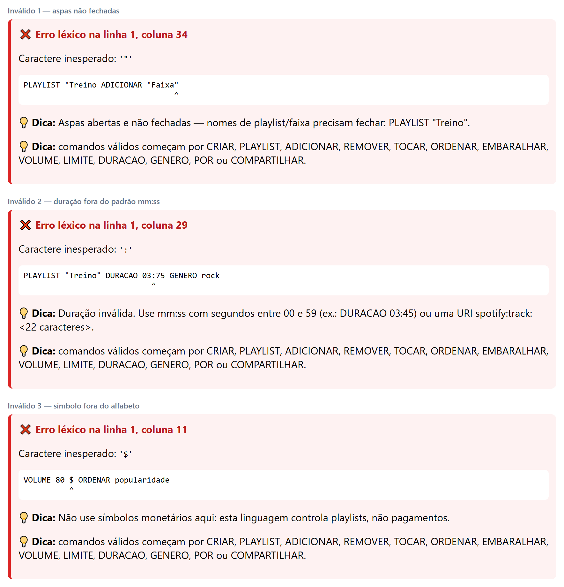
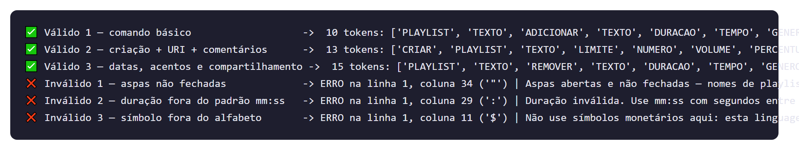
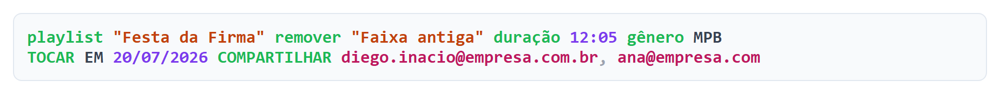
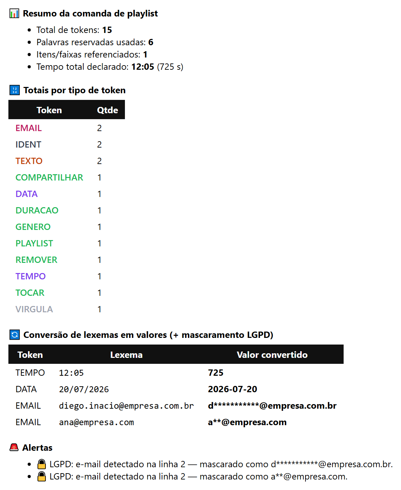

A linguagem
Comandos que qualquer pessoa escreveria
Assistentes de voz e bots de playlist recebem texto e precisam virar chamada de API. O primeiro passo é sempre o mesmo: separar e classificar as peças do texto. É isto que a pessoa digita:
E é assim que o lexer devolve o mesmo texto, com cada lexema pintado pela categoria do seu token — exatamente o que o syntax highlight de um editor faz:

texto_colorido_html, a primeira coisa que a interface mostra.- palavra reservada
- texto entre aspas
- tempo e data
- número
- percentual e multiplicador
- URI e e-mail
- identificador

Tabela de tokens
23 tipos de token, em quatro famílias
Dois tokens especiais do domínio, oito literais definidos por expressão regular, treze palavras reservadas e dois genéricos — mais dois padrões que o lexer descarta.
Especiais do domínio
| Token | Descrição | Regex | Exemplo | Prio |
|---|---|---|---|---|
| URI_SPOTIFY | URI nativa do Spotify (ID de 22 caracteres base62) | /spotify:(?:track|album|artist|playlist):[A-Za-z0-9]{22}\b/i | spotify:track:4cOd… | 9 |
| E-mail de colaborador — dado sensível, tratado pela LGPD | /[A-Za-z0-9._%+\-]+@[A-Za-z0-9\-]+(?:\.[A-Za-z]{2,})+/ | diego@empresa.com.br | 8 |
Literais com regex
| Token | Descrição | Regex | Exemplo | Prio |
|---|---|---|---|---|
| DATA | Data de agendamento | /\d{2}\/\d{2}\/\d{4}/ | 20/07/2026 | 7 |
| TEMPO | Duração mm:ss, segundos de 00 a 59 | /\d{1,2}:[0-5]\d/ | 03:45 | 7 |
| PERCENTUAL | Volume em porcentagem | /\d{1,3}%/ | 80% | 6 |
| MULTIPLICADOR | Repetições ou cópias de uma faixa | /\d+x\b/i | 3x | 6 |
| TEXTO | Nome de playlist ou faixa, entre aspas | /"[^"\n]*"/ | "Treino" | 4 |
| NUMERO | Literal numérico inteiro | /\d+/ | 25 | 2 |
Palavras reservadas — todas com /i e \b
| Token | O que comanda | Regex | Exemplo | Prio |
|---|---|---|---|---|
| PLAYLIST | Alvo do comando | /playlist\b/i | PLAYLIST | 5 |
| CRIAR | Cria uma playlist | /criar\b/i | criar | 5 |
| ADICIONAR | Inclui faixa | /adicionar\b/i | Adicionar | 5 |
| REMOVER | Exclui faixa | /remover\b/i | REMOVER | 5 |
| TOCAR | Reproduz | /tocar\b/i | TOCAR | 5 |
| ORDENAR | Ordena por um critério | /ordenar\b/i | ORDENAR | 5 |
| EMBARALHAR | Shuffle | /embaralhar\b/i | EMBARALHAR | 5 |
| DURACAO | Duração da faixa — aceita acento e cedilha | /dura[cç][aã]o\b/i | duração | 5 |
| GENERO | Gênero musical — aceita acento | /g[eê]nero\b/i | gênero | 5 |
| VOLUME | Volume de reprodução | /volume\b/i | VOLUME | 5 |
| LIMITE | Limite de faixas | /limite\b/i | LIMITE | 5 |
| POR | Autoria: POR "artista" | /por\b/i | POR | 5 |
| COMPARTILHAR | Compartilha com um colaborador | /compartilhar\b/i | COMPARTILHAR | 5 |
Genéricos e ruído descartado
| Token | Descrição | Regex | Exemplo | Prio |
|---|---|---|---|---|
| IDENT | Identificador livre: gênero, critério de ordenação | /[A-Za-zÀ-ÿ_][A-Za-zÀ-ÿ0-9_\-]*/ | popularidade | 1 |
| VIRGULA | Separador de lista | /,/ | , | 1 |
| COMENTARIO | Comentário de linha — ignorado | /#[^\n]*/ | # nota da equipe | — |
| espaços | Espaço, tabulação e quebra de linha — ignorados | /[ \t\r\n]+/ | — | — |
Prioridades
A escada que resolve os conflitos
Quando dois terminais casam na mesma posição, o Lark desempata pela prioridade. A regra do projeto é simples: quanto mais específico o padrão, mais alta a prioridade.
- 9URI_SPOTIFYvence
IDENT+:e o falsoTEMPOdentro da URI - 8EMAILvence
IDENT+@ - 7DATA · TEMPOvencem
NUMERO— senão03:45viraria03e um erro no: - 6PERCENTUAL · MULTIPLICADORvencem
NUMERO:80%e3xsão unidades do domínio - 5as 13 palavras reservadasvencem
IDENT; o\bevita casar prefixos de palavras maiores - 4TEXTOliteral delimitado por aspas, não colide com o restante
- 2NUMEROgenérico: só depois dos numéricos especializados
- 1IDENT · VIRGULAo fallback mais genérico da linguagem

Diário de ambiguidade
Dois pontos, dois significados
O conflito mais relevante do projeto apareceu no mesmo estilo do caso pix@loja.com.br do
enunciado, mas na versão Spotify: o lexema spotify:track:4cOdK2wGLETKBW3PvgPWqT.
Na primeira versão da gramática existiam apenas IDENT, NUMERO e
TEMPO. O lexer quebrava a URI em IDENT("spotify") e lançava
UnexpectedCharacters no : — ou, pior, casava TEMPO em pedaços que
pareciam mm:ss. O : é ambíguo nesta linguagem porque serve para
duas coisas diferentes: separar minutos de segundos em DURACAO 03:45 e separar os
campos de uma URI.
A solução foi criar o terminal URI_SPOTIFY com prioridade 9 — a maior de todas — e uma
regex bem restritiva, que exige o prefixo literal, um tipo conhecido e exatamente 22 caracteres base62.
Como o Lark desempata pela prioridade do terminal, a URI é consumida por inteiro antes que
IDENT ou TEMPO tenham chance de agir; e como a regex é restritiva, ela nunca
"rouba" um DURACAO 03:45 legítimo.
O mesmo raciocínio valeu para o EMAIL (prioridade 8, para não virar IDENT +
@ inválido) e para o par DATA/TEMPO (prioridade 7 sobre o
NUMERO, que tem prioridade 2). Por fim, as 13 palavras reservadas ficaram com prioridade 5
contra o IDENT de prioridade 1, sempre com \b, para que playlistao
continue sendo um identificador comum e não PLAYLIST seguido de ao.
Erros léxicos
Linha, coluna e duas dicas
Cada erro informa a linha, a coluna e o caractere inesperado, repete a linha de código com um
marcador ^ embaixo do culpado e dá duas dicas: uma específica daquele caractere e outra listando
os comandos válidos da linguagem.

| Caractere | Dica exibida |
|---|---|
" | Aspas abertas e não fechadas |
: | Duração inválida (use mm:ss, segundos de 00 a 59) ou URI incompleta |
@ | E-mail malformado em COMPARTILHAR |
% | Porcentagem inválida: 1 a 3 dígitos colados ao % |
/ | Data fora do formato dd/mm/aaaa |
$ | Símbolo monetário não pertence a esta linguagem |
& | Use , para separar itens de uma lista |
' | Use aspas duplas para nomes |
No caso DURACAO 03:75, o erro cai no : da coluna 29 —
e não no 75. Como 03:75 não casa com TEMPO, o NUMERO come
o 03 e sobra um : sem dono. Um bom lembrete de que a mensagem de erro de um
compilador nem sempre aponta para a causa exata do problema.
Casos de teste
Três válidos e três inválidos
A função testar roda os seis casos de uma vez e imprime o resultado de cada um:
contagem de tokens nos válidos, linha, coluna e dica nos inválidos.

testar(tokenizar_desafio, casos_desafio).-
Comando básico 10 tokens
PLAYLIST "Treino" ADICIONAR "Nome da faixa" DURACAO 03:45 GENERO rock ORDENAR popularidade -
Criação, URI e comentários 13 tokens
# monta a playlist de foco e limita o tamanho CRIAR PLAYLIST "Foco Total" LIMITE 25 VOLUME 80% EMBARALHAR ADICIONAR 3x spotify:track:4cOdK2wGLETKBW3PvgPWqT POR "Rick Astley" # faixa fixa -
Datas, acentos e compartilhamento 15 tokens

Este caso prova três coisas de uma vez: duraçãoegênerosão aceitos com acento,playlisteremoverfuncionam em minúsculas, e cada e-mail vira um token só.
| Caso | Entrada | Resultado |
|---|---|---|
| Aspas não fechadas | PLAYLIST "Treino ADICIONAR "Faixa" | linha 1, coluna 34 " |
| Duração fora do padrão | PLAYLIST "Treino" DURACAO 03:75 GENERO rock | linha 1, coluna 29 : |
| Símbolo fora do alfabeto | VOLUME 80 $ ORDENAR popularidade | linha 1, coluna 11 $ |
Bônus
Do lexema ao valor — e à LGPD
A segunda aba da interface pega a lista de tokens e faz o trabalho seguinte: converte cada lexema no valor que ele representa, mascara os dados pessoais e levanta alertas de regra de negócio.
Conversões
TEMPO→ segundos (12:05vira725)DATA→datetime.dateNUMERO,PERCENTUALeMULTIPLICADOR→intTEXTO→ string sem as aspas
Mascaramento (LGPD)
- e-mail →
d**********@empresa.com.br - URI →
spotify:track:4cOd**************PWqT - cada e-mail encontrado também vira um alerta, com a linha em que apareceu
Resumo
- total de tokens e de palavras reservadas usadas
- faixas referenciadas
- tempo total declarado, em
mm:sse em segundos - totais por tipo de token, do mais frequente ao menos
Alertas
- volume acima de 100%
- faixa com menos de 30 segundos
- nome vazio entre aspas
- presença de dado pessoal
- comando sem
PLAYLISTouCRIAR

2026-07-20.Entrega
Como executar e quem fez
Google Colab
- Abra o notebook pelo botão Abrir no Colab no topo da página.
- Descomente e rode a primeira célula:
!pip install -q lark ipywidgets. - Execute todas as células em Ambiente > Executar tudo.
Jupyter local
pip install lark ipywidgets notebookjupyter notebook analisador_lexico_spotify_tema5.ipynb- No VS Code, instale também a extensão Jupyter.
O GitHub exibe o notebook, mas não executa os widgets — eles precisam de um kernel ativo. Para usar a interface, abra no Colab.
Integrantes
- Diego Azevedo Dias IgnacioRA 2392072
- Gabriella Pereira RodriguesRA 2334425
- Giovanna Bispo Da SilvaRA 2367880
- José Henrique Guimarães Galvão SilvaRA 249994